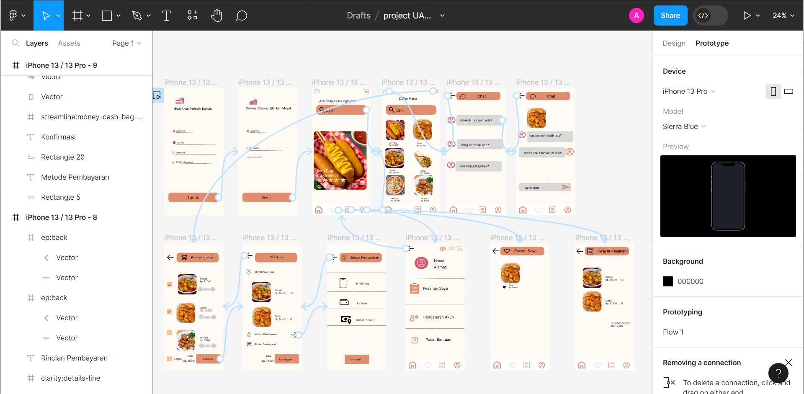

Portofolio

UI/UX Design untuk pemesanan makanan

Menulis artikel tentang keterwakilan perempuan di dunia politik
Saya merupakan seorang mahasiswi di politeknik harapan bersama Tegal jurusan teknik informatika, umur saya 20 tahun, saya berdomisili di Brebes.
WA :085803460471
instagram : @amallianaa
UI/UX Design untuk pemesanan makanan
Menulis artikel tentang keterwakilan perempuan di dunia politik